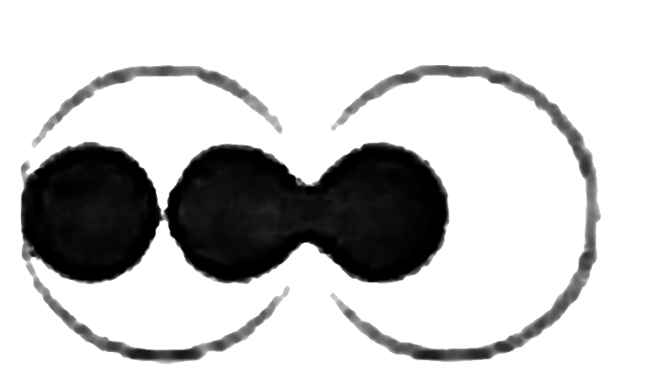
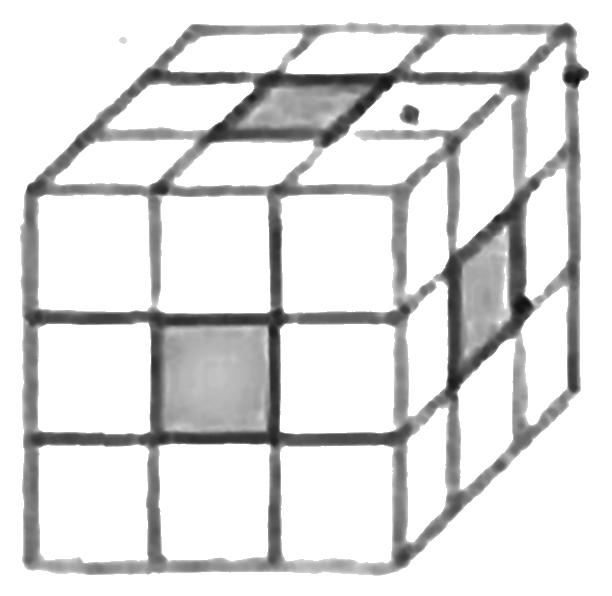

לכל מספר טבעי x הוגדרה הפעולה $ כך:
אם a אי־זוגי אז $(a) = 2a + 12
אם a זוגי אז $(a) = aa + 1
איזו מהטענות הבאות נכונה בהכרח?
בכמה מספרים תלת־ספרתיים מכפלת הספרות שווה ל־128?
נתונים שני מטבעות הוגנים וקובייה לא הוגנת. על צידו האחד של המטבע הראשון הוטבעה הספרה 1 ועל צידו השני הוטבעה הספרה 2. על צידו האחד של המטבע השני הוטבעה הספרה 3 ועל צידו השני הוטבעה הספרה 4. בהטלת הקובייה הסיכוי לקבלת תוצאה אי־זוגית קטן פי 4 מהסיכוי לקבלת תוצאה זוגית. אוהד הטיל את כל אחד המטבעות והקובייה פעם אחת.
מה הסיכוי שמכפלת שלוש התוצאות תניב תוצאה זוגית?
A, B ו־C מייצגות ספרות שונות בין 0 ל־9. נתון:
AA × AA ----- BBC4
B × C = ?

בסרטוט שלפניכם 2 מעגלים זהים המשיקים זה לזה ובתוכם 3 מעגלים זהים (המעגלים המשחורים) המשיקים זה לזה.
על פי הנתונים הללו ונתוני הסרטוט, מהו היחס בין השטח הלבן שבסרטוט לשטח השחור?
⚠ התשובות קטנות – נקראו בקירוב.
נתון: a הוא מספר זוגי. a = 4b + 12 − 2c + 12
מה מהבאים נכון בהכרח?
(x12 · x13 · x16)⁴ = 625⚠
x = ?
בסרטוט שלפניכם מלבן ABCD. שני רוכבי אופניים יצאו לרכיבה מהנקודה A, באותה השעה ובאותה המהירות. רוכב א' רכב לאורך היקפו של המלבן בחזרה עד לנקודה A. רוכב ב' רכב לאורך המסלול המסומן בחיצים עד לנקודה B.
מה מהבאים נכון בהכרח?

נתון: b < a , b ≠ 0 , c = ab
מה מהבאים בהכרח לא נכון?

קובייה גדולה מורכבת מקוביות קטנות זהות כבסרטוט. אופק הוציא את הקובייה המרכזית בכל פאה. שטח הפנים של הצורה שנוצרה גדל ב־x% משטח הפנים של הקובייה הגדולה.
מה מהבאים מייצג נכונה את ערכו של x?